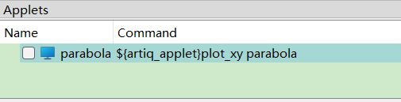
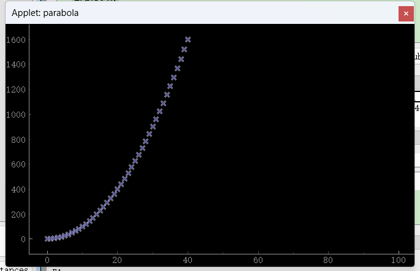
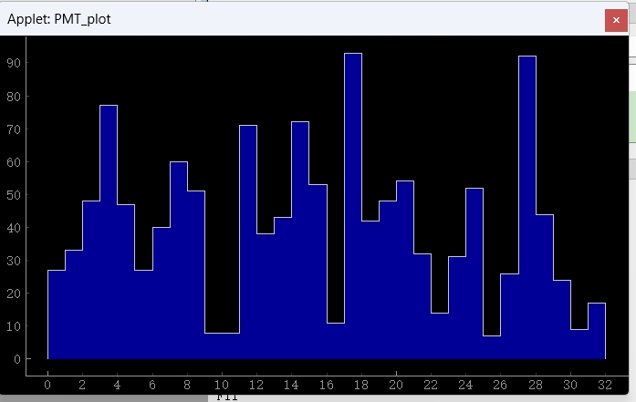
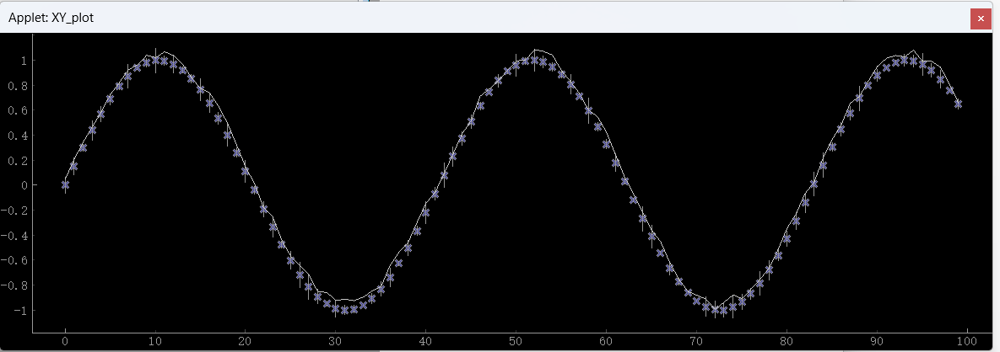
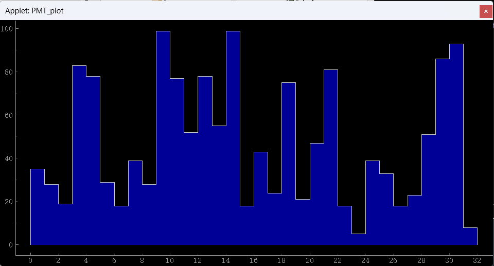

Get Start of dataset & plot
Abstract
在 ARTIQ 系统中，数据收集、处理和展示是十分重要的一环。但现有的文档对这一点所述甚少。本 Note 的目的在于，帮助初学者入门 ARTIQ 的数据库与展示功能。
Example_1: set_dataset & mutate_dataset
hdf5
artiq 系统使用 HDF5 文件来保存数据。该文件类似于一个字典，可以包含多个键值对。
形如：
{
"data1":100，
"data2":[100,2000]
"data3":np.array([100,200,300])
}
每一个“键”对应到一组数据。
示例
在 ARTIQ 实验代码中，我们可以通过 set_dataset 和 mutate_dataset 来创建和更新数据集，用法如下：
import time
import numpy as np
from artiq.language import EnvExperiment
class DataSetExample1(EnvExperiment):
"""1. set_dataset & mutate_dataset"""
def build(self):
pass
def run(self):
# 1. 建立数据集
self.set_dataset("parabola", np.full(100, np.nan), broadcast=True) # 用 np.full(100, np.nan) 建立一个 shape=(100,) 的空 numpy 数组。
# 2. 更新数据集
for i in range(100):
self.mutate_dataset("parabola", i, i * i) # 将 "parabola" 第 i 个位置的数据修改为 i * i
time.sleep(0.5)
其中，set_dataset 的第一个参数是键值对的“键”，也即数据集的名称。第二个参数是键值对的“值”，用于保存数据。第三个参数 broadcast=Ture 表示更新后的数据是否实时的发送到主机（如果是 False，数据会不及时更新）
后面的 mutate_dataset 方法，第一个参数指定“键”，第二个参数指定要改动的数据的位置索引，第三个参数表示该位置的数据。
后处理
在 artiq 主窗口中运行完这段代码后，会新建一个 hdf5 数据集文件，并保存在项目的 result 文件夹下。后续可通过 hdf5 脚本打开进行绘图 or 数据处理。
Example_2: plot_xy
数据集既然已经创建，如何绘图？
ARTIQ 中，实验代码的执行与控制面板分属不同的进程。ccb（Client control broadcasts） 是 ARTIQ 系统中的虚拟仪器模块，其 ccb.issue 方法用于向控制面板提交跨进程任务。绘图功能在控制面板里，也通过该方法实现跨进程提交。
import time
import numpy as np
from artiq.language import EnvExperiment
class DataSetExample2(EnvExperiment):
"""2. plot_xy"""
def build(self):
# 1. 将 "ccb" 虚拟仪器添加进实验环境
self.setattr_device("ccb")
def run(self):
# 1. 建立数据集
self.set_dataset("parabola", np.full(100, np.nan),
broadcast=True)
# 2. 提交绘图任务
# 参数一（固定不可更改）：提交一个创建绘图组件的任务；参数二：绘图组件的标题；参数三：绘图指令
self.ccb.issue("create_applet", "parabola", "${artiq_applet}plot_xy parabola")
# 3. 更新数据集
for i in range(100):
self.mutate_dataset("parabola", i, i * i)
time.sleep(0.5)
ccb（Client control broadcasts） 是 ARTIQ 系统中的虚拟仪器模块，用于向控制面板提交跨进程任务。
本代码新增的 ccb.issue 方法需要填入多个参数
- 参数一“create_applet”：不可更改，向控制面板提交一个绘图任务
- 参数二：绘图组件的标题
- 参数三：具体的绘图指令，这里需要强调下，artiq 绘图所有的复杂性都在此处。其中：
${artiq_applet}是固定前缀，不可更改。plot_xy是绘图函数，它对应源码中的plot_xy.py模块，用于绘制笛卡尔曲线图。（除了plot_xy.py之外还有其他绘图模块，如用于绘制直方图的plot_hist.py, 想要绘制直方图时， 直接更改此处即可。)parabola是目标数据集的“键”。
代码执行到 self.ccb.issue 中时，控制面板的 applets 中会新增一项：

打开前面的复选框，即可看到随时间进行而实时更新的数据：

Example_3: plot_hist
上个例子在演示 xy 轴上的绘图，本节将演示直方图的绘制。
在离子阱系统中，直方图通常用于实时显示来自 PMT 的光子计数数据。
import time
import numpy as np
from artiq.language import EnvExperiment
class DataSetExample3(EnvExperiment):
"""3. plot_hist"""
def build(self):
self.setattr_device("ccb")
def run(self):
# 1. 建立数据集
self.set_dataset("PMT", np.full(32, np.nan),
broadcast=True) # 建立一个 32 位的 numpy 数组，用于存储 PMT 数据
# 2. 提交绘图任务
self.ccb.issue("create_applet", "PMT_plot", "${artiq_applet}plot_hist PMT")
# 3. 更新数据集
for i in range(100):
# 3.1 模拟产生 PMT 的实时数据，范围是（0，100），32 位
data = np.random.randint(0, 100, 32)
# 3.2 更新数据集
self.mutate_dataset("PMT", (0, 32), data) #
time.sleep(0.5)
运行实验代码时，我们得到实时绘制的直方图。

绘图功能的补充
在前面的例子中，为了方便理解我只载入了一列数据（Y 轴数据），x 轴的数据是绘图模块自动创建的。当然，我们也可以输入 x 轴的数据，plot_xy 还支持 error_bar 数据。下面列举了 plot_xy 和 plot_hist 支持输入的所有参数。
需要注意：数组的形状一定要符合要求。
plot_xy
- y：Y values，一维数组
- x：X values，一维数组，形状需与 y 一致
- error：每个 x 对应的 y 值的 error bar，一维数组，形状需与 y 一致
- fit：拟合曲线。形状需与 y 一致
下面是一个填全了参数的示例，新增的每个参数都用 "--x" + "X" 的格式来指定被选取的数据集。
import numpy as np
from artiq.language import EnvExperiment
class DataSetExample4(EnvExperiment):
"""4. plot_xy_entire 包括所有的参数"""
def build(self):
self.setattr_device("ccb")
self.x = np.linspace(0, 15, 100)
def run(self):
# 1. 建立数据集
self.set_dataset("Y", np.sin(self.x), broadcast=True)
self.set_dataset("X", self.x, broadcast=True)
self.set_dataset("error", np.random.rand(100) * 0.2, broadcast=True)
self.set_dataset("fit", np.sin(self.x) + np.random.rand(100) * 0.1, broadcast=True)
# 2. 提交绘图任务
self.ccb.issue("create_applet", "XY_plot", "${artiq_applet}plot_xy Y --x X1 --error error --fit fit")

小提示：error 和 fit 曲线通常是在数据处理完之后创建。可以在 prepare/run 函数里创建空的数据集，方便 ccb.issue 提交绘图任务，并在 analysis 函数中做数据分析，并更新到图中。
plot_hist
- y: Y values 一维数组
- x: X values 一维数组，比 y 多一个数（本模块所绘的直方图，在两个横坐标之间的区域显示数据，因此横坐标需要多一位数）
import time
import numpy as np
from artiq.language import EnvExperiment
class DataSetExample5(EnvExperiment):
"""5. plot_hist_entire"""
def build(self):
self.setattr_device("ccb")
def run(self):
# 1. 建立数据集
self.set_dataset("PMT", np.full(32, np.nan),
broadcast=True) # 建立一个 32 位的 numpy 数组，用于存储 PMT 数据
self.set_dataset("PMT_channels", np.arange(0, 33), broadcast=True) # PMT 通道索引
# 2. 提交绘图任务
self.ccb.issue("create_applet", "PMT_plot", "${artiq_applet}plot_hist PMT --x PMT_channels")
# 3. 更新数据集
for i in range(100):
# 3.1 模拟产生 PMT 的实时数据，范围是（0，100），32 位
data = np.random.randint(0, 100, 32)
# 3.2 更新数据集
self.mutate_dataset("PMT", (0, 32), data) #
time.sleep(0.5)
运行后得到：
